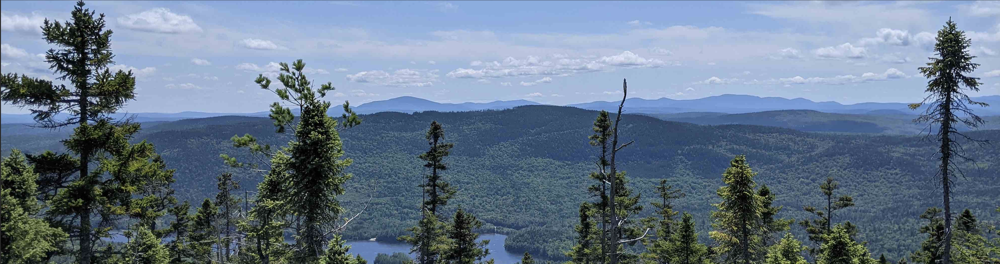

Major: Mechanical Engineering
IP Adress: 192.168.12.37
Something Unexpected: I hate driving and haven't driven a car in more than a year!

One of my favorite places is Baxter State Park in Maine as pictured above.
Click on different parts of the picture to learn more!